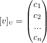
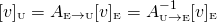

Knowing how to convert a vector to a different basis has many practical applications. Gilbert Strang has a nice quote about the importance of basis changes in his book [1] (emphasis mine):
The standard basis vectors for and are the columns of I. That choice leads to a standard matrix, and in the normal way. But these spaces also have other bases, so the same T is represented by other matrices. A main theme of linear algebra is to choose the bases that give the best matrix for T.
This should serve as a good motivation, but I'll leave the applications for future posts; in this one, I will focus on the mechanics of basis change, starting from first principles.
The basis and vector components
A basis of a vector space  is a set of vectors in that is
linearly independent and spans . An ordered basis is a list, rather
than a set, meaning that the order of the vectors in an ordered basis matters.
This is important with respect to the topics discussed in this post.
is a set of vectors in that is
linearly independent and spans . An ordered basis is a list, rather
than a set, meaning that the order of the vectors in an ordered basis matters.
This is important with respect to the topics discussed in this post.
Let's now define components. If is an ordered
basis for and is a vector in , then there's a
unique [2] list of scalars such that:
These are called the components of relative to the ordered basis . We'll introduce a useful piece of notation here: collect the components into a column vector and call it : this is the component vector of relative to the basis .
Example: finding a component vector
Let's use  as an example. is an
ordered basis for (since the two vectors in it are
independent). Say we have .
What is ? We'll need to solve the system of
equations:
as an example. is an
ordered basis for (since the two vectors in it are
independent). Say we have .
What is ? We'll need to solve the system of
equations:
In the 2-D case this is trivial - the solution is and . Therefore:
![\[[v]_{\text {\tiny U}}=\begin{pmatrix} 3 \\ -1 \end{pmatrix}\]](../../images/math/548b7f57bfc01932593b5cdaa597b77f531bd03b.png)
In the more general case of , this is akin to solving a linear system of n equations with n variables. Since the basis vectors are, by definition, linearly independent, solving the system is simply inverting a matrix [3].
Change of basis matrix
Now comes the key part of the post. Say we have two different ordered bases for the same vector space: and . For some , we can find and . How are these two related?
Surely, given we can find its coefficients in basis the same way as we did in the example above [4]. It involves solving a linear system of equations. We'll have to redo this operation for every vector we want to convert. Is there a simpler way?
Luckily for science, yes. The key here is to find how the basis vectors of
look in basis . In other words, we have to find
, and so on to
![[u_n]_{\text{\tiny W}}](../../images/math/3f2515b5f7e26704e96f99b9947392836689cf34.png) .
.
Let's say we do that and find the coefficients to be such that:
Now, given some vector , suppose its components in basis are:
Let's try to figure out how it looks in basis . The above equation (by definition of components) is equivalent to:
Substituting the expansion of the s in basis , we get:
Reordering a bit to find the multipliers of each  :
:
By our definition of vector components, this equation is equivalent to:
Now we're in vector notation again, so we can decompose the column vector on the right hand side to:
This is matrix times a vector. The vector on the right is
. The matrix should look familiar too because it
consists of those coefficients we've defined above. In fact, this
matrix just represents the basis vectors of expressed in basis
. Let's call this matrix - the change of basis matrix from to . It
has to laid out
in its columns:
So we have:
To recap, given two bases and , we can spend some effort to compute the "change of basis" matrix , but then we can easily convert any vector in basis to basis if we simply left-multiply it by this matrix.
A reasonable question to ask at this point is - what about converting from to ? Well, since the computations above are completely generic and don't special-case either base, we can just flip the roles of and and get another change of basis matrix, - it converts vectors in base to vectors in base as follows:
And this matrix is:
We will soon see that the two change of basis matrices are intimately related; but first, an example.
Example: changing bases with matrices
Let's work through another concrete example in . We've
used the basis before; let's use it again, and also add
the basis . We've already seen that for
we have:
Similarly, we can solve a set of two equations to find :
OK, let's see how a change of basis matrix can be used to easily compute one given the other. First, to find we'll need and . We know how to do that. The result is:
Now we can verify that given and , we can easily find :
Indeed, it checks out! Let's also verify the other direction. To find we'll need and :
And now to find :
Checks out again! If you have a keen eye, or have recently spent some time solving linar algebra problems, you'll notice something interesting about the two basis change matrices used in this example. One is an inverse of the other! Is this some sort of coincidence? No - in fact, it's always true, and we can prove it.
The inverse of a change of basis matrix
We've derived the change of basis matrix from to to perform the conversion:
Left-multiplying this equation by :
But the left-hand side is now, by our earlier definition, equal to , so we get:
Since this is true for every vector , it must be that:
From this, we can infer that and vice versa [5].
Changing to and from the standard basis
You may have noticed that in the examples above, we short-circuited a little bit of rigor by making up a vector (such as ) without explicitly specifying the basis its components are relative to. This is because we're so used to working with the "standard basis" we often forget it's there.
The standard basis (let's call it ) consists of unit vectors pointing
in the directions of the axes of a Cartesian coordinate system. For
we have the basis vectors:
And more generally in we have an ordered list of vectors where has 1 in the th position and zeros elsewhere.
So when we say , what we actually mean is:
The standard basis is so ingrained in our intuition of vectors that we usually neglect to mention it. This is fine, as long as we're only dealing with the standard basis. Once change of basis is required, it's worthwhile to stick to a more consistent notation to avoid confusion. Moreover, it's often useful to change a vector's basis to or from the standard one. Let's see how that works. Recall how we use the change of basis matrix:
Replacing the arbitrary basis by the standard basis in this equation, we get:
And  is the matrix with
to in its
columns. But wait, these are just the basis vectors of ! So finding
the matrix for any given
basis is trivial - simply line up 's basis vectors as columns
in their order to get a matrix. This means that any square, invertible matrix
can be seen as a change of basis matrix from the basis spelled out in its
columns to the standard basis. This is a natural consequence of how multiplying
a matrix by a vector works by linearly combining the matrix's columns.
is the matrix with
to in its
columns. But wait, these are just the basis vectors of ! So finding
the matrix for any given
basis is trivial - simply line up 's basis vectors as columns
in their order to get a matrix. This means that any square, invertible matrix
can be seen as a change of basis matrix from the basis spelled out in its
columns to the standard basis. This is a natural consequence of how multiplying
a matrix by a vector works by linearly combining the matrix's columns.
OK, so we know how to find given . What about the other way around? We'll need for that, and we know that:
Therefore:
Chaining basis changes
What happens if we change a vector from one basis to another, and then change
the resulting vector to yet another basis? I mean, for bases ,
and  and some arbitrary vector , we'll do:
and some arbitrary vector , we'll do:
This is simply applying the change of basis by matrix multiplication equation, twice:
![\[A_{\text{\tiny W}\rightarrow \text{\tiny T}}(A_{\text{\tiny U}\rightarrow \text{\tiny W}}[v]_{\text{\tiny U}})=\\ A_{\text{\tiny W}\rightarrow \text{\tiny T}}[v]_{\text{\tiny W}}\\ =[v]_{\text{\tiny T}}\]](../../images/math/f80dd3f39e7e736972e31ec553e8541628ab038c.png)
What this means is that changes of basis can be chained, which isn't surprising given their linear nature. It also means that we've just found , since we found how to transform to (using an intermediary basis ).
Finally, let's say that the indermediary basis is not just some arbitrary , but the standard basis . So we have:
We prefer the last form, since finding for any basis is, as we've seen above, trivial.
Example: standard basis and chaining
It's time to solidify the ideas of the last two sections with a concrete
example. We'll use our familiar bases and
from the previous example, along with the standard basis
for . Previously, we transformed a vector from
to and vice-versa using the change of basis matrices between
these bases. This time, let's do it by chaining via the standard basis.
We'll pick . Formally, the components of relative to the standard basis are:
In the last example we've already computed the components of relative to and :
Previously, one was computed from the other using the "direct" basis change matrices from to and vice versa. Now we can use chaining via the standard basis to achieve the same result. For example, we know that:
Finding the change of basis matrices from some basis to is just laying out the basis vectors as columns, so we immediately know that:
The change of basis matrix from to some basis is the inverse, so by inverting the above matrices we find:
Now we have all we need to find from :
![\[[v]_{\text{\tiny W}}=\\ A_{\text{\tiny E}\rightarrow \text{\tiny W}}A_{\text{\tiny U}\rightarrow \text{\tiny E}}[v]_{\text{\tiny U}}=\begin{pmatrix} -0.5 & 0.5 \\ 0.5 & 0.5 \end{pmatrix}\begin{pmatrix} 2 & 4\\ 3 & 5 \end{pmatrix}\begin{pmatrix} 3 \\ -1 \end{pmatrix}=\begin{pmatrix} 1 \\ 3 \end{pmatrix}\]](../../images/math/1f5875aba56faf3fda3c9f4c72b1421529958116.png)
The other direction can be done similarly.
| [1] | Introduction to Linear Algebra, 4th edition, section 7.2 |
| [2] | Why is this list unique? Because given a basis for a vector
space , every can be expressed uniquely as
a linear combination of the vectors in . The proof for this is
very simple - just assume there are two different ways to express
- two alternative sets of components. Subtract one from the
other and use linear independence of the basis vectors to conclude that
the two ways must be the same one. |
| [3] | The matrix here has the basis vectors laid out in its columns. Since the basis vectors are independent, the matrix is invertible. In our small example, the matrix equation we're looking to solve is: |
| [4] | The example converts from the standard basis to some other basis, but converting from a non-standard basis to another requires exactly the same steps: we try to find coefficients such that a combination of some set of basis vectors adds up to some components in another basis. |
| [5] | For square matrices  and and  , if then also
. , if then also
. |